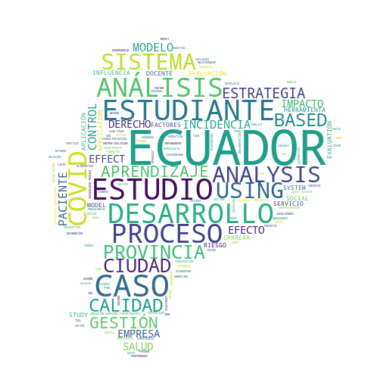

#pip install wordcloudUna nube de palabras (también conocida como nube de etiquetas o word cloud) es una representación visual de las palabras que conforman un texto o conjunto de textos, donde el tamaño de cada palabra es proporcional a su frecuencia o importancia dentro del texto. Cuanto más aparece una palabra, o más relevante sea, mayor y más destacada se mostrará.
0.1 Usos comunes
- Visualizar ideas clave o temas frecuentes de manera rápida y atractiva.
- Mostrar etiquetas en sitios web o blogs, resaltando los temas principales para mejorar la navegación o la experiencia del usuario.
- Explorar datos textuales cualitativos como respuestas de encuestas o comentarios, identificando tendencias o palabras más mencionadas.
- Resumen visual de textos extensos (investigaciones, manuales, artículos académicos o reseñas de productos), ayudando a captar rápidamente los puntos centrales.
- Apoyo en presentaciones y marketing, como elemento visual en infografías o slides para captar la atención del público.
- Herramienta interactiva en dinámicas grupales, ideal para captar opiniones del público, romper el hielo o generar debates durante talleres, reuniones o clases.
- Exploración rápida de temas principales en investigación textual, útil como vista previa antes de análisis más profundos (“previewing” de temas, personajes o conceptos).
0.2 Características
- Estética visual: A menudo presentan colores variados y disposición dispersa, lo que les da un aspecto atractivo aunque la elección de color puede ser meramente decorativa.
- Limitaciones analíticas: Son útiles para obtener una vista general, pero no ofrecen contexto semántico ni relaciones profundas entre palabras.
0.3 Errores a evitar
- Preprocesar el texto: Fusiona sinónimos, aplica stemming* o lematización, y limpia palabras redundantes o irrelevantes (“stopwords”).
- Limitar el número de palabras: Mostrar solo las más relevantes mejora la claridad.
- Elegir diseño con propósito: Usa fuentes legibles, colores que tengan significado.
- Complementar con otras visualizaciones: Usa gráficos de barras, tablas o análisis semántico para respaldar la nube con datos precisos y contexto.
1 Librería wordcloud
La librería wordcloud es una herramienta de Python diseñada para generar nubes de palabras a partir de uno o varios textos. Es muy útil para: - Análisis exploratorio de texto, destacando las palabras más frecuentes. - Procesamiento de lenguaje natural (NLP), como paso visual previo a un análisis más profundo. - Visualizaciones e informes, aportando un elemento gráfico atractivo y fácil de comprender.
1.1 Características principales
- Permite personalizar colores, fuentes y tamaño de las palabras.
- Admite enmascarar la nube con cualquier forma o imagen (por ejemplo, un corazón, una estrella o un logotipo), gracias a su integración con Pillow.
1.2 Instalación
Para instalar wordcloud junto con sus dependencias más comunes:
pip install wordcloud
pip install pillow
::: {#6e5c724c .cell execution_count=31}
``` {.python .cell-code}
#pip install pillow:::
2 Dataset: Base de Artículos Publicados 2015–2023
Fuente:
Secretaría de Educación Superior, Ciencia, Tecnología e Innovación (SENESCYT)
Descripción:
Este dataset contiene la base estadística de artículos científicos publicados por las universidades y escuelas politécnicas de Ecuador en revistas indexadas durante el periodo 2015 – 2023.
import pandas as pd
from wordcloud import WordCloud, STOPWORDS
import matplotlib.pyplot as plt
df = pd.read_excel("Base_estadistica_articulos_UEP_15_23.xlsx", skiprows=12)
print(df["NOMBRE ARTICULO"].head())0 KINETIC ALFVÉN WAVE GENERATION BY LARGE-SCALE ...
1 AMTEC CLUSTERS FOR POWER GENERATION IN A CONCE...
2 MÉTODO DE LENTE TÉRMICA RESUELTA EN FRECUENCIA...
3 SINGLE BEAM THERMAL DIFFUSIVITY MEASUREMENTS I...
4 GRAPH-THEORETIC ANALYSIS OF NETWORK INPUT-OUTP...
Name: NOMBRE ARTICULO, dtype: object2.1 Iteracion 1
# Extraer la columna de títulos de artículos
textos = df["NOMBRE ARTICULO"].dropna().astype(str)
# Unir todos los títulos en un solo texto
texto_unido = " ".join(textos)
# Stopwords
stopwords = set(STOPWORDS)
# Crear la nube de palabras
nube = WordCloud(
width=1000,
height=600,
background_color="white",
stopwords=stopwords,
colormap="viridis" # paleta de colores (puedes cambiar)
).generate(texto_unido)
# Mostrar la nube
plt.figure(figsize=(12, 7))
plt.imshow(nube, interpolation="bilinear")
plt.axis("off")
plt.show()
2.2 Iteracion 2
Agregar stopwords en español.
with open("stopwords-es.txt", "r", encoding="utf-8") as f:
stopwords_es = list([line.strip() for line in f if line.strip()])
stopwords_es[10:20]['_',
'a',
'actualmente',
'acuerdo',
'adelante',
'ademas',
'además',
'adrede',
'afirmó',
'agregó']#agrega los de esp
stopwords = set(list(STOPWORDS)+ stopwords_es )
#forma circula
import numpy as np
x, y = np.ogrid[:300, :300]
mask = (x - 150) ** 2 + (y - 150) ** 2 > 130 ** 2
mask = 255 * mask.astype(int)
# Crear la nube de palabras
nube = WordCloud(
width=1000,
height=600,
background_color="white",
stopwords=stopwords,
colormap="viridis" , # paleta de colores (puedes cambiar)
mask=mask
).generate(texto_unido)
plt.imshow(nube, interpolation="bilinear")
plt.axis("off")
plt.show()
# imagen procesamiento
from PIL import Image, ImageOps
mask_img = Image.open("SiluetEcuador.png").convert("L")
mask = np.array(mask_img)
#agrega los de esp
stopwords = set(list(STOPWORDS)+ stopwords_es )
# Crear la nube de palabras
nube = WordCloud(
width=1000,
height=700,
background_color="white",
stopwords=stopwords,
colormap="viridis" , # paleta de colores (puedes cambiar)
mask=mask
).generate(texto_unido)
plt.imshow(nube, interpolation="bilinear")
plt.axis("off")
plt.show()
2.3 Realice un WordCloud de articulos de la Universidad San Francisco
df.columnsIndex(['AÑO', 'TIPO', 'NOMBRE UNIVERSIDAD', 'TIPO FINANCIAMIENTO',
'PROVINCIA UNIVERSIDAD', 'BASE DATOS INDEXADA', 'NOMBRE REVISTA',
'NOMBRE ARTICULO', 'CAMPO AMPLIO', 'CAMPO ESPECIFICO',
'CAMPO DETALLADO'],
dtype='object')# Extraer la columna de títulos de artículos
textos = df[df['NOMBRE UNIVERSIDAD']=="UNIVERSIDAD SAN FRANCISCO DE QUITO"]["NOMBRE ARTICULO"].dropna().astype(str)
#agrega los de esp
stopwords = set(list(STOPWORDS)+ stopwords_es )
# imagen procesamiento
mask_img = Image.open("usfq.png").convert("L")
mask = np.array(mask_img)
# Crear la nube de palabras
nube = WordCloud(
width=1000,
height=600,
background_color="white",
stopwords=stopwords,
colormap="Reds" , # paleta de colores (puedes cambiar)
mask=mask
).generate(texto_unido)
plt.imshow(nube, interpolation="bilinear")
plt.axis("off")
plt.show()